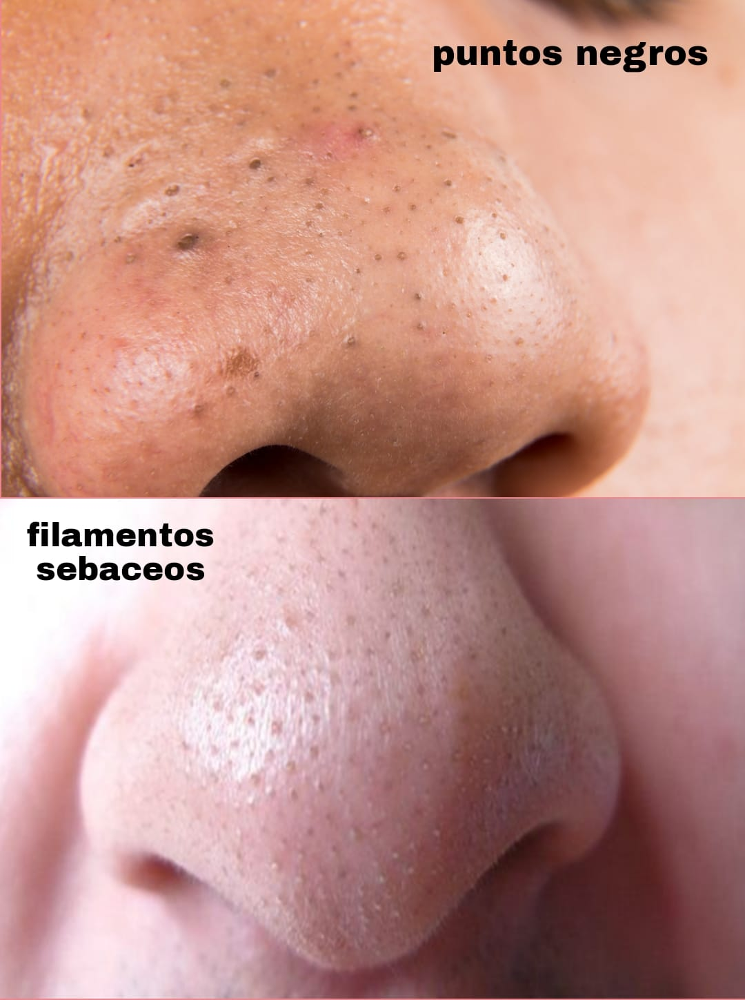

EXTRACCIONES 🙌🏻
Limpiamos impurezas , quitamos puntitos negros y granitos
Muchas me preguntan acerca de “como quitarse los puntos negros” pero ¿ Están seguras de que son puntos negros ?
Les quiero contar que muchos de ustedes piensan que tienen puntitos negros y en realidad son filamentos sebáceos normales. Los tenemos en todo el rostro y cuando tenemos exceso de grasa/ aceite suelen oscurecerse
Por otro lado... la mejor forma de tratar puntos negros y limpiar los filamentos sebáceos es no apretarlos, cuidar e higienizar CONSTANTEMENTE nuestra piel

Cuanta cantidad de producto debo utilizar en cada paso de mi rutina de piel?
Ojo! Aveces pensamos que cuanto más producto utilicemos mejores resultados vamos a ver, y esto NO es así! Aveces menos es mas
Nuestra piel necesita respirar e ir absorbiendo productos de a poco sin ser asfixiada con muchas cantidades
También, lo ideal es que a medida que estamos haciendo nuestra rutina de piel (mañana/noche) dejemos que los productos absorban uno por uno para luego aplicar el que sigue!
Tenemos que tener en cuenta las señales que nos da nuestra piel : si sentis la piel tirante al salir de la ducha es falta de HIDRATACIÓN
Si sentis que tu piel no absorbe bien los productos es porque necesitas usar productos más livianos o menos cantidades